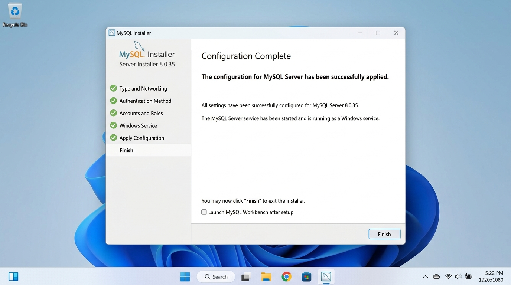
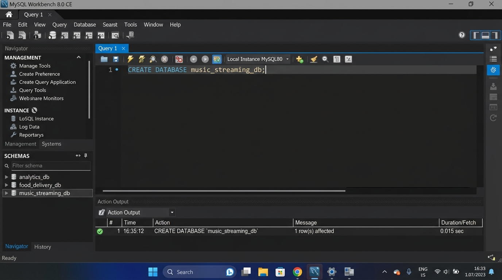
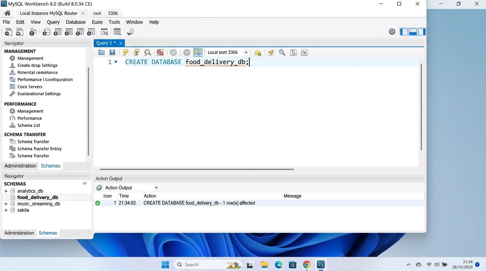

analytics_db CreationCREATE DATABASE IF NOT EXISTS analytics_db;
SHOW DATABASES LIKE 'analytics_db';Status: VERIFIED & EXECUTED
MySQL Community Server was configured and running as a dedicated Windows Service on port 3306.

music_streaming_db COMPLETEDConnected to local MySQL instance at localhost:3306 and executed:
CREATE DATABASE IF NOT EXISTS music_streaming_db;
food_delivery_db COMPLETEDSQL command to create the food delivery database:
CREATE DATABASE IF NOT EXISTS food_delivery_db;
USE food_delivery_db;
| Feature / Dimension | MySQL | PostgreSQL |
|---|---|---|
| 1. Architecture & Engine Model | Pure Relational DBMS with pluggable storage engines (InnoDB, MyISAM, Memory). Tuned for blazing-fast read operations and transactional web applications. | Object-Relational DBMS (ORDBMS). Highly extensible; allows custom operators, indexing structures (GiST, GIN, BRIN), and procedural languages. |
| 2. Complex Data Types & Analytics | Standard SQL types with basic native JSON column support. Focused on straightforward transactional OLTP workloads. | Advanced analytical support: native JSONB (binary indexed JSON), arrays, hstore, PostGIS for geospatial analysis, full window functions and CTEs. |
| 3. Concurrency & MVCC | InnoDB uses undo logs for MVCC. Specific DDL modifications can cause table-level or row metadata locks. | Robust Multi-Version Concurrency Control (MVCC) where readers never block writers and writers never block readers, excelling in concurrent write/analytical mixes. |
| Popular Company / App Example | Meta (Facebook) — Powers the world's largest MySQL database infrastructure for user interactions, messages, and social graph queries. | Spotify — Relies on PostgreSQL for catalog metadata, complex relational queries, playlist indexing, and user listening analytics. |
SHOW DATABASES;
+--------------------+
| Database |
+--------------------+
| analytics_db |
| food_delivery_db |
| music_streaming_db |
| da_001 |
| da_002 |
| da_003 |
| sakila |
| world |
+--------------------+